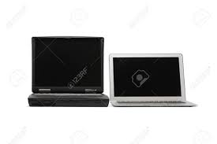
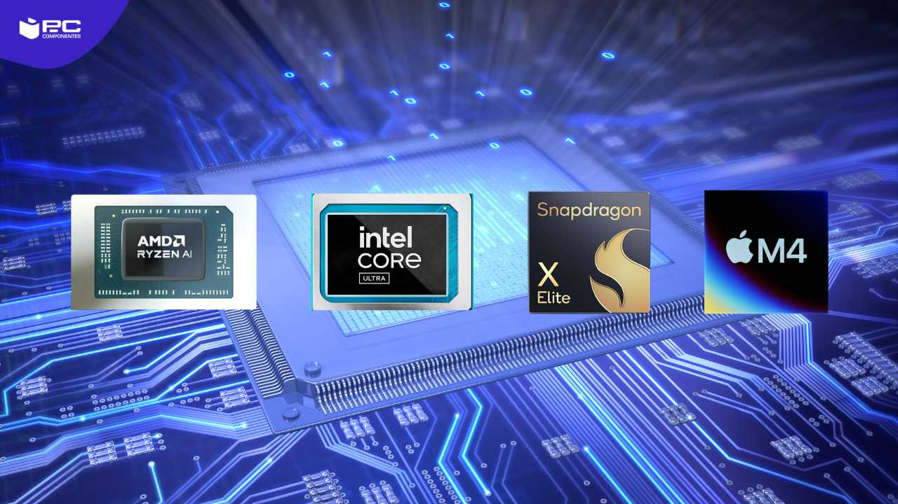

LAS DIFERENCIAS SON MUY GRANDES A DIFERENCIA DE HACE 10 AÑOS O MAS EN UN laptop
1-Los dispositivos antiguos servían principalmente para comunicación
computadoras actuales.jpg
Hoy en día aún utilizamos estructuras de control de flujo para nuestros programas, ciclos y demás instrucciones, con la gran diferencia de que ahora tenemos computadoras en todos lados. Probablemente el teléfono que llevas ahora mismo en el bolsillo es 1300 veces más poderoso que esas primeras computadoras programadas con tarjetas perforadas, ocupando un espacio 40 millones de veces menor.
En la programación moderna, una página web se puede convertir en una aplicación móvil conservando casi el mismo código por medio de frameworks o librerías, como React Native o Ionic.
Además, plataformas como GitHub facilitan la escritura de código de forma colaborativa entre equipos de ingeniería de software alrededor del mundo.
Comprar una de las mejores laptops supondría un cambio radical en tu forma de trabajar. Si actualmente sufres de problemas de lentitud, programas que no se cargan o estás harto de tener que reiniciar siempre el equipo porque no encuentra la red Wi-Fi, adquirir una nueva laptop o notebook quizá te permita trabajar mejor y más rápido.
 3. Marcas y Modelos Populares en la laptop
Cuáles son las mejores marcas de laptops? HP, Apple y Lenovo son algunas de las principales marcas de laptops en la actualidad. Si quieres conocer la lista completa de las mejores marcas de computadoras portátiles del 2025, aquí te compartimos más detalles de ellas y sus modelos más recomendados para estudiantes, profesionales o gamers. ► Laptops HP La laptop HP es ampliamente reconocida en el ámbito tecnológico. Desde 1995, la empresa Hewlett-Packard ha estado fabricando laptops, y desde el lanzamiento de su primer modelo en agosto de 2000, la marca HP se ha convertido en un referente en el mundo de las laptops. La laptop HP se destacó como una de las primeras en ofrecer un rendimiento de primera calidad sin comprometer la portabilidad. Estas laptops fueron diseñadas con la premisa de ser fáciles de usar e incluían características como discos duros de gran capacidad, pantallas amplias y baterías duraderas. Estas características las convirtieron en una opción excelente para los usuarios de laptops. A lo largo de los años, las laptops HP han experimentado mejoras significativas para ofrecer un rendimiento y una versatilidad que superan las expectativas iniciales. HP ahora ofrece una amplia gama de laptops, desde modelos básicos hasta opciones de alto rendimiento. Estas laptops se han convertido en el estándar de calidad y rendimiento en la industria y siempre se han mantenido a la vanguardia de la innovación tecnológica.
Laptops Apple La historia de las laptops de Apple se remonta a principios de la década de 1980, cuando Steve Jobs, el fundador de Apple, lanzó el primer Apple Macintosh en 1984, convirtiéndose en la primera computadora portátil de la compañía. El Macintosh portátil fue un gran avance en los ordenadores portátiles al ser el primero en contar con una pantalla incorporada y una unidad de disco duro. A lo largo del tiempo, Apple ha continuado innovando en el campo de las laptops, presentando la PowerBook 100 en 1991, que fue la primera laptop con procesador de 32 bits. Desde entonces, la compañía ha lanzado una amplia gama de laptops Apple, desde el modelo básico MacBook hasta el más avanzado MacBook Pro. Las laptops de Apple se destacan por su diseño elegante y su funcionalidad distintiva. Esto se debe a su hardware de alta calidad y al sistema operativo macOS, que permite a los usuarios realizar tareas de manera más sencilla. Además, las laptops de Apple vienen equipadas con una variedad de aplicaciones y servicios, como iCloud, que facilitan el uso de la computadora.
Laptops Lenovo Las laptops Lenovo comenzaron a estar disponibles en el año 2000, cuando la empresa china Lenovo adquirió la división de computadoras personales de IBM. Desde entonces, Lenovo se ha convertido en uno de los principales fabricantes de computadoras personales, incluyendo laptops. Las laptops Lenovo han ganado reconocimiento por su innovación y calidad. Con la tecnología ThinkPad, los usuarios disfrutan de un rendimiento excepcional, una durabilidad incomparable y la seguridad proporcionada por el software de seguridad de la marca. Estas laptops se han consolidado como una de las principales marcas de computadoras portátiles a nivel mundial. Además de su amplia variedad de laptops, Lenovo también ofrece computadoras de escritorio, servidores y una extensa gama de productos de tecnología de la información. Estos productos han sido diseñados para satisfacer las necesidades de los usuarios más exigentes, tanto en entornos domésticos como en grandes empresas. Esto ha contribuido a que Lenovo se posicione como uno de los principales proveedores de tecnología a nivel global.
4. Procesadores para Diferentes Usos laptops
Gama Baja Los dispositivos de gama baja están diseñados para usuarios con necesidades básicas. Son los más accesibles en términos de precio, pero también cuentan con características limitadas. Suelen tener procesadores menos potentes, menor capacidad de almacenamiento y pantallas con resoluciones más bajas. Son ideales para tareas como llamadas, mensajería, navegación web básica y uso de redes sociales. Gama Media Los dispositivos de gama media ofrecen un equilibrio entre rendimiento y costo. Incorporan procesadores más eficientes, mejores pantallas y mayor almacenamiento en comparación con la gama baja. Son una excelente opción para quienes buscan un equipo con buen desempeño sin gastar demasiado. Pueden ejecutar aplicaciones más exigentes y multitarea de manera fluida, aunque sin alcanzar el nivel de los dispositivos de gama alta. Gama Alta Los equipos de gama alta están diseñados para ofrecer la mejor experiencia posible. Se caracterizan por procesadores de última generación, pantallas de alta resolución, gran capacidad de almacenamiento y materiales premium en su construcción. Son ideales para tareas avanzadas como edición de video, juegos de alto rendimiento y fotografía profesional. Además, incluyen las últimas innovaciones tecnológicas y cuentan con un precio significativamente más elevado. Principales Diferencias Característica Gama Baja Gama Media Gama Alta Procesador Básico Intermedio Potente Pantalla Resolución baja HD o Full HD Alta resolución (2K o más) Cámara Calidad básica Buenas fotos Fotos y videos profesionales Materiales Plástico y sencillos Mixto (metal y plástico) Premium (metal, vidrio, cerámica) Precio Económico Intermedio Alto costo Conocer estas diferencias ayuda a elegir el equipo adecuado según las necesidades y el presupuesto de cada usuario.
